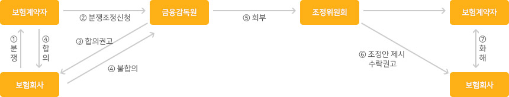
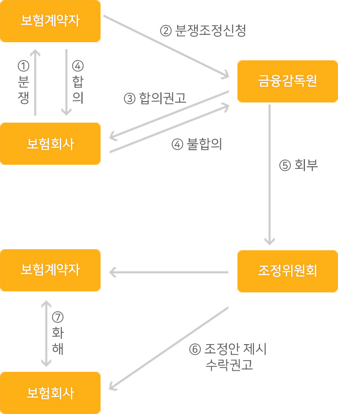

안녕하십니까! 박 * 희 고객님
항상 저희 KB손해보험을 아껴주시는 고객님께 감사드립니다.
저희 KB손해보험은 고객님의 편안하고 행복한 생활을 위해 항상 최선을 다하겠습니다.
고객님은 소중한 가족입니다.
증권
기본정보
2017-2302207(동일)
보험가입자동차
KNMC4C2HMGP195503 연식
2016B
보험료 사항
가입사항(담보/특약) 및 보험료 사항
(의무가입 1사고당 자배법 한도)
(임의가입 1사고당 자배법 한도 초과액)
1인당 3000/1500/3000 만원 한도
손해포괄
손해액20%(최소20만원/최대50만원)공제
특별약관
특별 약관
기명피보험자한정
일시납
매직카서비스
보험대차사고보상
친환경부품사용
E-mail매직터치
희망나눔자동차
대물배상확장
자기차량손해포괄
최저연령운전자: 2017/11/01 24:00이전 만 35세 이상만, 이후부터 만43세 이하만 운전가능(가족)
대물배상 자배법한도는 기존 1천만원에서 2016.4.1부터 2천만원으로 적용됨
물적사고할증기준그액: 200만원(사고시 갱신보험료 할증될 수 있음)
매직카서비스: 5회 이용시 자동해지(1500-0114)
청약서
상품정보
기본정보
차량정보
계약사항
| 선택담보 | 보험가입금액 | 적용보험료 |
|---|---|---|
| 임의계 | 대인배상2 - 매직카서비스 | 490,970원 |
| 합계 | 의무보험 + 임의계 | 839,590원 |
| 대인배상1 | 자배법 시행령에서 정한 금액 | 202,810원 |
| 대인배상2 | 1인당 무한 | 192,870원 |
| 대물배상 | 합계 1사고당 3억원 한도 (의무가입 1사고당 자배법 한도) (임의가입 1사고당 자배법 한도 초과액) |
338,010원 (221,350원) (116,660원) |
| 자기신체사고 | 사망/부상/후유장해 1인당 3000/1500/3000 만원 한도 |
12,930원 |
| 무보험차상해 | 1인당 2억원 한도 | 9,830원 |
| 자기차량손해포괄 | 차량가입금액: 180만원 손해액20%(최소20만원/최대50만원)공제 |
125,900원 |
| 매직카서비스 | 24시간 긴급 출동 서비스 | 51,740원 |
초회보험료
| 의무보험료 | 임의보험료 | 합계 보험료 |
|---|---|---|
| 424,160원 | 509,930원 | 934,090원 |
특별약관
기명피보험자한정
일시납
매직카서비스
보험대차사고보상
친환경부품사용
E-mail매직터치
희망나눔자동차
대물배상확장
자기차량손해포괄
대물배상 자배법한도는 기존 1천만원에서 2016.4.1부터 2천만원으로 적용됨
물적사고할증기준금액: 200만원 (사고시 갱신보험료 할증될 수 있음)
매직카서비스: 5회 이용시 자동해지 (1500-0114)
- 할인한증 11Z82%
- 분납할증요율100.0%
- 에어백1좌석(운전자석)90.0%
- 가입경력율105.04%
- 스포츠형자동차요율(차외담)158.0%
- 스포츠형자동차요율(차량담)188.0%
- 전계약사KB
- 물적사고할증기준금액:200만원
- 물적사고할증기준금액 -
(50/100/150/200만원)선택가능
분납보험료
| 회차 | 날짜 | 금액 |
|---|---|---|
| 제1회 | 2016-11-30 | 934,090원 |
참고사항
계약전 알릴의무 사항 및 자필서명
| 구급용, 보안회사의 긴급출동 차량으로 사용합니까? | |
|---|---|
| 보험금 지급계좌 정보제공에 동의하십니까? | |
| 통신수단을 이용한 계약해지에 동의하십니까? |
- 본 계약의 운전 가능 범위는(주민등록상 1987년 05월 06일 이전 출생자만 운전가능(2인))이므로 그 외의자가 운전 중 발생한 사고에 대하여는 보상을 받을 수 없는 사실 등을 정확히 듣고 위 청약 사항에 이의가 없음을 확인합니다. 또한 본 자동차 보험의 청약서부본 및 약관을 전달 받았음을 확인합니다.
- 예금보험관계 설명제도 : 본인이 가입하는 보험계약의 예금자 보호여부 및 보호한도(해약환급금(또는 만기시 보험금이나 사고 보험금)에 기타지급금을 합하여 1인당 5천만원)에 대하여 설명 듣고 이해하였음을 확인합니다.(금융정보취약 계층은 우선 설명)
- 고객 정보 취급방침 교부 · 설명 : 본인은 KB금융그룹 ‘고객정보 취급방침’에 대하여 수령 및 설명을 들었음을 확인합니다. 자세한 내용은 약관 또는 홈페이지(www.kbinsure.co.kr)를 참고하시기 바랍니다.
- [알아두세요]를 확인하였습니다.
- 보험계약자가 피보험자동차를 실질적으로 소유, 사용, 관리하는 자가 아닌 자격이 없는 자를 기명피보험자로 지정할 경우, 보험계약이 무효로 되어 보험소비자가 예상하지 못한 피해를 볼 수 있습니다.
- 청약서 기재사항 중 보험료계산에 영향을 미치는 사항인 경우 계약체결 전 알려야 할 사항을 사실대로 알리지 않거나 다르게 알릴 경우 계약자, 피보험자의 의사와 관계없이 해지 또는 보상이 제한될 수 있습니다.
- 보험사기(고의사고, 허위사고, 피해과장, 음주 · 무면허운전, 차량 ·운전자 바꿔치기 등)는 형법상 금지된 범죄입니다.
- 전계약과 가입내용이 동일하거나, 관용, 상장법인 등은 상품설명서가 발행되지 않습니다. (신청 시 발급가능합니다.)
꼭 알아두세요
보험에 가입하실 때
1. 이 청약서의 기재사항은 반드시 사실 그대로를 알려야 하며, 만약 사실과 다르게 알리거나, 누락사항이 있을 경우에는 보험약관에 의하여 보상을 받을 수 없는 경우도 있습니다.
2. 가입하실 담보종목 및 특약의 보상내용, 보험가입금액, 보상받을 수 있는 경우와 없는 경우를 반드시 확인하시고, 자필서명을 반드시 하시기 바랍니다.
3. 「운전자연령한정운전특약」에 가입하신 경우에는 해당 연령 미만의 자가 운전 중 발생한 사고에 대하여는 보상을 받을 수 없습니다.
(운전자연령은 주민등록상 생년월일 기준 만 나이입니다.)4. 「가족 및 형제운전자 한정운전 특별약관」으로 보험에 가입하신 경우에는 기명피보험자와 그 부모 및 양부모, 계부모, 배우자, 형제 혹은 자매, 자녀, 또는 양녀, 계자녀, 법률 혼의 며느리 및 사위(계자녀의 배우자 포함), 기명피보험자의 배우자의 부모 또는 양부모, 계부모 이외의 자가 운전 중 발생한 사고에 대하여는 보상받을 수 없습니다.
5. 「가족운전자 한정운전 특별약관」으로 보험에 가입하신 경우에는 기명피보험자와 그 부모 또는 양부모, 계부모, 배우자, 자녀, 양자 또는 양녀, 계자녀, 법률혼의며느리 및 사위(계자녀의 배우자 포함), 기명피보험자의 배우자의 부모 또는 양부모, 계부모 이외의 자가 운전중 발생한 사고에 대하여는 보상을 받을 수 없습니다. 「부부운전자 한정운전 특별약관」으로 보험에 가입하신 경우에는 기명피보험자와 그 배우자 이외의 자가 운전중 발생한 사고에 대하여는 보상받을 수 없습니다. 「기명피보험자 한정운전특별약관」으로 보험을 가입하신 경우에는 기명피보험자 이외의 자가 운전중 발생한 사고에 대하여는 보상을 받을 수 없습니다. 「운전자2인 한정운전 특별약관」으로 보험에 가입하신 경우에는 기명피보험자와 지정 1인 운전자 이외의 자가 운전중 발생한 사고에 대하여는 보상을 받을 수 없습니다.
6. 사망보험금 수익자를 지정/변경하고자 할 경우에는 사망보험금 지급 사유가 발생하기 전에 피보험자가 서면으로 동의해야 합니다. 만약 계약자가 보험수익자를 지정하지 않은 때에는 민법상 피보험자의 법정상속인 순위로 보험수익자를 정합니다.
민법상 법정상속인 순위는 1. 직계비속, 2. 직계존속, 3. 형제자매, 4. 4촌이내의 방계혈족 입니다. 배우자는 위의 1,2순위 상속인이 있는 경우에 그 상속인과 동순위로 공동상속인이 되고, 그 상속인이 없을 때에는 단독 상속인이 됩니다.7. 비사업용으로, 유상운송을 하는 다인승 1종승용, 다ㅏ인승 2종승용, 또는 승합자동차(버스)가 「유상운송위험담보특약」에 가입하지 아니하면 유상운송 증 발생한 사고에 대하여는 보상을 받을 수 없습니다.
8. 「운행영상기록장치 장착 특별약관」의 경우, 블랙박스 제품 사항 및 피보험자동차에 장착되어 있는 사항을 확인할 수 있는 사진을 제출하여야 합니다. 만약, 사실과 다르게 알리거나, 누락사항이 있을 경우에는 할인받은 보험료를 회사에 반환하여야 합니다.
9. 보험증권은 계약 체결 후 7일 이내(영업일수 기준)에 우편 또는 영업담당자를 통해 전달해드립니다.
10. 보험료 납입후에는 당사가 발생하는 영수증을 교부받아 보관하여야 합니다.
11. 대리운전중 사고가 발생하는 경우에는 대인배상Ⅰ담보로 보상됩니다.
12. 피보험자동차의 사용용도를 사실대로 알리지 아니하면 보상을 받지 못하는 경우도 있습니다.
13. 자동차손해배상보장법의 개정으로 인하여 2005년 2월 22일 기준으로 대물배상담보가 의무적으로 가입되어 있어야 하며, 미가입시 과태료가 부과됩니다.
14. 귀하가 납부하시는 책임보험료(대인배상Ⅰ)의 1%에 해당하는 금액은 자동차손해배상보장사업을 위해 사용됩니다.
보험에 가입하신 후
1. 보험계약을 변경하고자 할때는 우리회사의 지역단, 지점 또는 영업담당자에게 문의하시기 바랍니다.
2. 보험계약을 맺은 후 보험계약자나 피보험자의 주소 또는 연락처가 변경된 경우에는 변경사항을 즉시 회사에 알려주셔야 합니다.
3. 피보험자ㅏ동차의 용도, 차종, 등록번호, 구조변경이 있을 때, 위험물질을 적재할 때, 유상운송을 할 때, 위험이 뚜렷이 증가하거나 또는 적용할 보험료에 차이를 발생시키는 사실을 안 때 등 청약서에 기재된 사항에 변동이 생길 때에는 우리 회사에 즉시 알려주셔야 합니다.
4. 보험료 분할납입특약으로 가입한 경우 제2회 이후의 분할보험료는 약관상 주어지는 납입최고 기간의 말일까지는 반드시 납입하셔야 합니다.
(단, 영업용자동차보험 대인배상Ⅰ과 대물배상 분납계약 체결건은 대인배상Ⅰ과 대물배상도 해지되어 보상받지 못합니다.)5. 자동차를 양도한 때에는 이 보험계약은 양수인에게 승계되지 아니합니다.
다만, 양수인과 보험계약의 승계를 약정하고 그 사실을 회사에 서면으로 통지하여 승인을 받으면 그때부터 양수인에게 이 보험계약이 적용됩니다.6. 기존 자동차를 폐차 또는 양도하고 다른 승용자동차로 대체하였을 때에는 그 사실을 회사에 알리고, 회사의 승인을 받을 때로부터 대체된 자동차에 이 보험계약이 승계됩니다.
7. 피보함자 또는 손해배상청구권자가 가지급보험금을 청구한 경우에는 보험회사는 약관에 따라 지급할 금액의 한도내에서 가지급보험금을 지급합니다.
(단, 의무보험읠 초과하는 대물배상, 자기신체사고, 무보험자동차에 의한 상해, 자기차량손해는 약관상 지급할 금액의 50% 한도내에서 지급합니다.)8. 무면허 운전을 하였거나, 음주운전을 하였을 때 발생한 자기차량손해는 보상되지 않습니다.
9. 기타 자세한 사항은 해당 자동차보험약관을 참조하시기 바랍니다.
3대 기본지키기 안내사항
보험회사가 3대 기본기키기 미이행시 보험계약자는 청약일로부터 3개월이내(단, 일반 보험의 경우 1개월 이내)에 취소할 수 있으며, 이 경우 회사는 이미 납입한 보혐료에 보험계약대출이자를 더하여 드립니다.
1. 청약서 자필 서명(날인)
2. 청약서부본 및 보험약관 교부
3. 약관의 주요내용 설명
보험모집질서 신고센터 안내
1. 보험계약과 관련한 보험모집질서 문란 행위는 보험업법에 의해 처벌받을 수 있습니다.
2. 금융감동원 보험모집질서 위반행위 신고 센터 => 전화 : 1332 인터넷 : www.fss.or.kr
3. 사고접수, 보험 등 보험 계약 관련 문의(KB손해보험) => 전화번호 : 1544-0114 인터넷 : www.kbinsure.co.kr
개인정보를 보호받을 권리
보험계약자는 관련 법에서 정한 경우를 제외하고 본인의 동의 없이 본인의 개인정보가 제 3자에게 제공 이용되지 않을 권리가 있습니다.
보험상담 및 보험분쟁조정 안내
보험상담 및 보험에 관한 불만이나 분쟁이 발생한 경우에는 당사 고객콜센터(1544-0114)로 문의하시기 바랍니다. 처리결과에 이의가 있을 경우 금융감동원의 금융소비자보호센터(국번없이 1332, www.fss.or.kr)에 민원 또는 분쟁조정을 신청하실 수 있습니다.
예금자 보호 안내
이 보험계약은 예금자보호범에 따라 예금보호공사가 보호하되, 보호 한도는 본 보험회사에 있는 귀하의 모든 예금보호대상 금융상품의 해약환급금(또는 만기 시 보험금이나 사고 보험금)에 기타지급금을 합하여 1인당 “최고 5천만원＂이며, 5천만원을 초과하는 나머지 금액은 보호하지 않습니다.
위 내용은 예금자보호법 및 관련 법령의 개정에 따라 다라질 수 있으며, 자세한 내용은 예금보호공사(www.kdic.or.kr)로 문의하시기 바랍니다.
질권설정사항
청약철회 신청서(의무보험 제외)
본인은 아래의 보험계약을 청약철회코자 하오니 납입보험료를 환급하여 주시기 바랍니다.
본인 통장으로 송금을 원할 경우 아래 사항을 기재하여 주시기 바랍니다.
청약을 철회하고자 하는 경우 보험료 영수증과 함께 보험증권 수령일로 부터 15일 이내에 가까운 지점에 방문하시거나 우편으로 제출해 주시면 송금해 드립니다.
보내시는 곳 (우)06134 서울시 강남구 테헤란로 117 KB손해보험빌딩(역삼동) KB손해보험
약관
상품설명서
| 보험회사 | KB 손해보험 |
|---|---|
| 모집자 | 자동차업무부, 박지희 (연락처: 02-0000-0000) |
| 보험상품 | KB매직카개인용 RQ16-33346007 |
| 보험기간 | 2016년 11월 30일 부터 2016년 11월 30일 까지 |
| 피보험자동차 | 12345678901234567 (모닝 2005) |
| 보험계약관계자 | 보험자 박지희 기명피보험자 박지희 |
| 보험계약조건 | 물적사고 할증기준: 200만원 / 자차손해액 20%(최소20만원/최대50만원) 공제 |
| 가입담보종목 | 대인배상1 / 대인배상2 / 대물배상 / 자기신체사고 / 무보험차상해 / 자기차량손해 |
| 가입특별약관 | 만 30세 이상 운전 기명피보험자한정 일시납 매직카서비스 보험대차사고보상 친환경부품사용 E-mail매직터치 희망나눔자동차 대물배상확장 자기차량손해포괄 |
| 보험료 납입기간 | 일시납(1회:2016-11-30) |
청약철회
보험계약자는 보험증권을 받은 날부터 15일 이내에 보험계약의 청약을 철회할 수 있으며, 청약철회시 보험회사는 보험계약자의 청약 철회를 접수한 날부터 3일 이내에 받은 보험료를 보험계약자에게 돌려 드립니다. 단, 전문보험계약자*가 보험계약의 청약을 한 경우, 청약한 날부터 30일이 지난 경우, 의무보험에 해당하는 보험계약，보험기간이 1 년 미만인 보험계약에 해당하는 경우에는 보험계약의 청약을 철회 할 수 없습니다.
'전문보험계약자'라 함은 보험계약에 관한 전문성과 자산규모 등에 비추어 보험계약의 내용을 이해하고 이행할 능력이 있는 자로서 국가, 한국은행, 금융기관,주권상장법인 등을 말하며, 구체적인 범위는"보험업법"에서 정하는 바에 따름
청약철회를 원하시는 경우에는 청약서의 청약철회란을 기입하신 후 아래 주소지로 우편으로 송부하거나, 가까운 영업점을 방문하여 제출하시면 됩니다. 다만, 공인인증서를 보유하신 고객은 저희 회사 인터넷 홈페이지(www.kbinsure.co.kr)를 통해서도 청약을 철회할 수 있습니다.
청약철회 신청주소: (061-34》서울 강남구 테헤란로 117, 13충 자보업무부 (역삼동，KB손해보험빌딩》B 02-6900-2882
영업점 위치 : 《061-34》서울 강남구 테헤란로 117, 13층 자보업무부 (역삼동, KB손해보험빌딩》자동차업무부 a 02-6900-2882
계약취소
보험계약자는 약관 및 청약서 부본(계약자 보관용 청약서)을 교부 받지 못했거나, 보험약관의 주요내용에 대한 설명을 듣지 못한 경우에는 계약체결일부터 3개월 이내에 이 보험계약을 취소할 수 있습니다. 계약취소는 가까운 영업점으로 내방하여 계약변경 신청서를 제출하시거나. 공인인증서를 보유하신 경우에는 저희 회사 인터넷 홈페이지(www.kbinsure.co.kr)를 통해서도 보험계약취소를 요청할 수 있습니다. 다만, 가입이 강제되는 의무보험(대인배상I, 대물배상)에 대해서는 취소할 수 없습니다.
계약전 알릴의무(고지의무》및 위반효과
보험계약자와 피보험자는 다른 보험계약사항, 피보험자동차 및 실소유자, 피보험자와 관련한 사항, 기타 서면으로 질문한 사항 또는 청약서 기재 사항에 대하여 사실대로 보험 회사에 알려야 하며，사실과 다르게 알리거나 알리지 아니한 경우에는 보험계약이 해지되거나 보험사고가 발생한 경우 보상받지 못할 수도 있습니다. 또한, 보험회사는 계약체결 후 계약전 알릴 의무 위반 사실을 확•인한 때에는 추가보험료를 더 받고 승인할 수 있습니다.
계약후 알릴의무
보험계약자는 보험계약을 맺은 후 다른 보험계약을 맺게 된 사실, 용도, 차종, 등록번호, 적재정량구조 등 피보험 자동차에 관한 사항이 변경되거나 기타 위험이 뚜렷이 증가되는 경우 등에는 지체없이 그 사실을 보험회사에 알리고 승인을 받아야 합니다.
보험료 납입연체
보험계약자가 보험료를 분할해서 납입하는 경우 제 2 회 이후의 보험료를 납입기일까지 납입하지 않았을 때에는 약정한 납입기일 로부터 일정기간의 납입최고기간을 두며, 이 기간이 끝나는 날의 24시부터 보험계약은 해지됩니다.
보험료 납입최고기간에 보험사고가 발생하는 경우 보상이 도I나, 납입최고기간이 끝나고 보험계약이 해지된 이후에 발생한 보험사 고에 대하여는 보상이 되지 않습니다.
담보의 특약별 보험료는 자동차보험 안내자료 서식을 참조하세요.
| 구분 | 지급사유 | 가입금액(보상한도) | 보험료 | 유의사항 | 가입여부 |
|---|---|---|---|---|---|
| 합계 | 934,090원 | ||||
| 대인배상I | 자동차사고로 다른 사람을 사망하게 하거나 다치게 한 경우에 자동차 손해 배상 보장법에서 정한 한도내에서 보장 |
|
202,810원 | 자동차손해배상보장 법상의무보험임. 다만, 2016.4.1 이후 사고에 대한 의무보험 최고 보상한도는 다음과 같음. 사망:1억 5천만원 후유장해:1 억5천만원 부상:3천만원 |
○ |
| 대인배상II | 자동차사고로 다른 사람을 사망하게 하거나 다치게 한 경우, 그 손해가 대인배상I에서 지급하는 금액을 초과 하는 경우에 그 초과 손해를 보상 | 피해자 1인당 최고한도: 무한 | 192,870원 | ○ | |
| 대물배상 | 자동차사고로 다른 사람의 재물을 없애거나, 훼손한 경 우에 보상 | 1사고당 최고한도: 3 억원 | 338,010원 | 가입금액 1천만원 까지는 자동차손해 배상보장법상의무 보험임. 다만, 2016.4.1 이후사고에 대한 의무보험 보상한도는 2천만원임 |
○ |
| 자기신체사고 | 피보험자가죽거나 다친 경우에 보장 | 사망/부상/후유장해 1인당 3000/1500/3000만원 한도 부상급별 한도내 지급 | 12,930원 | ○ | |
| 무보험차상해 | 무보험자동차에 의해 죽거나 다친 경우에 보상 | 최고한도: 2 억원 | 9,830원 | ○ | |
| 자기차량손해 | 피보험자동차가파손된 경우에 보상 |
|
125,900원 | 차량가액 한도내 보상 | ○ |
| 매직카서비스 | 자동차를 소유, 사용, 관리 하는 동안에 긴급출동서비스 가 필요한 경우 제공 |
|
51,740원 | 상품에 따라 보험 기간중 이용회수 제한 | ○ |
| 기타특약 | 0원 |
운전자연령한정운전특약을 가입하신 경우에는 사고발생시 가입하신 연령특약의 해당연령 및 범위에 포함되는 사람이 운전하던 중 발생한 사고는 보상하며, 해당연령 및 범위에 포함되지 않는 사람이 운전하던중 발생한 손해는 보상하지 않습니다.
다만 대인배상ᅵ은 운전자연령에 영향받지 않고 보상하여 드립니다.해당연령은 사고발생일 현재 주민등록상의 만 연령을 기준으로 합니다.
가족운전자 한정운전 특별약관을 가입하신 경우, 보장하는 범위는 운전자가
① 기명피보험자
② 법률상의 배우자 또는 사실혼 관계에 있는 배우자
③ 기명피보험자의 부모와 양부모, 계부모
④ 기명피보험자의 배우자의 부모 또는 양부모, 계부모
⑤ 법률상의 혼인관계에서 출생한 자녀, 사실혼관계에서 출생한 자녀，양자 또는 양녀, 계자녀
⑥ 법률상의 혼인관계에서의 기명피보험자의 며느리 또는 사위(계자녀의 배우자 포함)인 경우에 한정
하며, 그 외의 사람이 자동차를 운전 중 발생한 사고는 보상받지 못하므로 유의하시기 바랍니다.(형제•자매는 동 약관상 가족의 범위에서 제외되며, 형제•자매도 운전가능한 피보험자의 범위에 포함시키려면 별도의 특약을 가입하셔야 합니다.)
- 대물배상 담보는 대인배상I{책임보험)과 동일하게 반드시 가입해야 하는 의무보험(관련법상 가입금액 1 천만원*)이지만 운전자범위 제한 특약 또는 운전자연령제한 특약을 위반한 경우 대인배상1(책임보험)과는 달리 보상받지 못합니다.
2016.4.1 이후 사고에 대한 대물배상 의무보험 가입금액은 2천만원임.
- 자기신체사고 담보에서 운전자의 가족이 부상당한 경우에는 통상 자동차보험의 자기신체사고로 보상받는데, 치료비가 전액 지급 되는 것이 아니라 피해자의 부상급수에 따라 보험금이 지급됩니다. 다만, 치료 후 후유장해가 발생된 경우에는 장해보험금을 추가로 보상받을 수 있습니다
- 자동차상해(대체특약포함) 담보에서 운전자의 가족이 상해를 입은 경우 자동차상해 담보로 보상이 가능하며, 보험가입금액 한도 내에서 급별 한도 없이 치료비 외 휴업 손해，위자료, 상실수익액 등이 지급됩니다.
- 자기차량손해 담보에서 피보험자동차의 일부 부분품，부속품, 부속기계장치만의 도난 및 동파로 인한 손해 또는 우연한 외래의 사고에 직접 관련이 없는 전기적, 기계적 손해로 인한 손해는 보상하지 않습니다.
- 자기차량손해 당보에서 보험계약시 보험회사에 알려주지 않은 자동차의 부속품은 자기차량손해 사고시 보상하지 않습니다.
자기차량손해 담보의 자기부담금
자기차량손해 담보에서 자기부담금이란 보험증권에 기재된 최소 자기부담금과 최대 자기부담금을 한도로 '피보험자동차에 생긴 손해액* 의 일정비율(20% 또는 30%)에 해당하는 금액을 말합니다. 다만, 전부손해(차량이 환전히 파손)가 생긴 경우 또는 보상하여야 할 금액이 보험가입금액 전액 이상인 경우에는 자기부담금을 공제하지 않습니다.
(차량이 환전히 파손)가 생긴 경우 또는 보상하여야 할 금액이 보험가입금액 전액 이상인 경우에는 자기부담금을 공제하지 않습니다.
피보험자동차의 수리가 완료된 후 출고시점까지 과실이 확정된 경우에는 과실비율을 적용한 손해액의 20% 또는 30%에 해당하는 금액. 다만, 자동차사고 과실비율에 대한 다툼 등으로 자기부담금의 확정이 곤란한 경우에는 약관상 별도로 정한 _과실비율 인정 기준'에 [[ᅡ라 과실비율을 적용한 손해액을 기준으로 공제합니다.
| 가입조건 (최저자기부담금/물적사고할증기준) |
자기부담금 | 예시 손해액/자기부담금 | |||||
|---|---|---|---|---|---|---|---|
| 정률 | 최저 | 최고 | 손해액 | 50만원 | 70만원 | 210만원 | |
| 5만원/50만원 | 손해액 20% |
5만원 | 50만원 | 실제부담금 | 10만원 | 14만원 | 42만원 |
| 10만원/100만원 | 10만원 | 50만원 | 실제부담금 | 10만원 | 14만원 | 42만원 | |
| 15만원/150만원 | 15만원 | 50만원 | 실제부담금 | 15만원 | 15만원 | 42만원 | |
| 20만원/200만원 | 20만원 | 50만원 | 실제부담금 | 20만원 | 20만원 | 42만원 | |
| 30만원/200만원 | 손해액 30% |
30만원 | 100만원 | 실제부담금 | 30만원 | 30만원 | 63만원 |
| 50만원/200만원 | 50만원 | 200만원 | 실제부담금 | 50만원 | 50만원 | 63만원 | |
-
자기차량손해 보험계약의 종료
자기차량손해 담보에서 전부 손해일 경우 또는 보상한 금액이 보험가입금액 전액 이상인 경우에는 자기부담금을 공제하지 않으며, 자기차량손해 보험계약은 사고발생시에 종료합니다 .
-
자기차량에 손해가 발생시 피보험자가 무면허 운전을 하였거나, 음주운전을 하였을 때에 생긴 손해는 보상하지 않습니다.
-
피보험자가 음주운전 또는 무면허운전을 하는 동안의 사고로 인하여 보험회사가 보험금을 지급하게 되는 경우, 음주운전은 1사고당 대인배상 I,II 300만원, 대물배상 100만원을，무면허 운전은 1사고당 대인배상I 300만원, 대물배상 100만원을 자기부담금으로 본인이 부담하여야 합니다.
-
대인배상II 담보에서 배상책임이 있는 피보험자의 피용자 및 피보험자동차가 피보험자의 사용자의 업무에 사용되는 경우 그 사용자의 업무에 종사 중인 다른 피용자로서, 「산업재해보상보험법에 의한 재해보상을 받을 수 있는 사람인 경우 보상하지 않습니다. 다만, 그 사람이 입은 손해가 같은 법에 의한 보상범위를 넘어서는 경우 그 초과손해를 보상합니다.
-
대물배상 담보에서 피보험자 또는 그 부모, 배우자나 자녀가 소유.사용.관리하는 재물에 생긴 손해, 피보험자가 사용자의 업무에 종사하고 있을 때 피보험자의 사용자가 소유. 사용.관리하는 재물에 생긴 손해, 다른 사람의 서화, 골동품, 조각물, 그 밖에 미술품과 탑승자와 통행인의 의류나 휴대품에 생긴 손해에 대해서는 보상하지 않습니다.
-
대물배상 담보에서 피보험자동차에 싣고 있거나 운송 중인 물품에 생긴 손해에 대해서는 보상하지 않습니다. 또한, 업무용 및 영업용의 경우에는 피보험자가 피보험자동차를 공사수행을 위하여 사용 또는 관리하던 중 지하케이블, 도관, 기타 지하시설물을 파손한 경우 또는 지반의 침하로 생긴 손해 및 건물구조물의 붕괴, 도괴로 생긴 손해에 대해서는 보상하지 않습니다.
-
기타 보험회사가 보상하지 아니하는 사항은 약관을 참조하시기 바랍니다.
[보험금이 지급되지 않는 주요 사례 안내]
-
① 운전자 범위 제한 사례1
A는 자동차보험 가입시 운전자 범위를 본인으로 한정하는 특별약관(기명 피보험자 1 인 한정운전)을 가입하였음. 해당차량으로 A의 배우자인 B가 운전하던 중 주차된 차량과 접촉하는 사고가 발생하여 보험사에 대물배상 보험금을 청구 하였으나, 보험사 에서는 운전자 한정 특별약관 위반으로 보험금 지급이 어려움을 안내. 유의(참고》사항 : 운전자 범위 한정 특별약관에 가입한 경우 해당 운전자 범위에 포함되지 않은 자가 운전하던 중 발생한 사고는 보상받을 수 없으며, 위 사례에서 B는 기명피보험자가 아니기 때문에 보상 불가 -
② 운전자 범위 제한 사례2
C는 자동차보험 가입시 운전자 범위를 가족으로 한정하는 특별약관(가족운전자 한정운전)을 가입하였음. C의 친동생인 D가 해당 차량을 운전하던 중 충돌 사고가 발생하여 보험사에 보험금을 청구 하였으나, 보험사에서는 운전자 한정 특별약관 위반으로 대인배상I을 제외한 담보는 보험금 지급이 어려움을 안내 유의(참고)사항 : 운전자 범위 한정 특별약관에 가입한 경우 해당 운전자 범위에 포함되지 않은 자가 운전하던 중 발생한 사고는 보상받을 수 없으며, 위 사례에서 D는 특별약관상 가족에 포함되지 않기 때문에 보상 불가(다만대인배상I은 보상 가능) -
③ 운전자 연령 제한 사례
E는 자동차보험 가입시 운전자 연령을 만 26세 이상으로 한정하는 특별약관(운전자 연령 만26세 이상 한정 운전)을 가입하였음. E의 자녀인 F가(만 24세)해당차량을 운전하던 중 선행차량의 후미를 추돌하는 사고가 발생하여 보험사에 보험금을 청구 하였으나, 보험사에서는 운전자 연령 한정 특별약관 위반으로 대인배상I을 제외한 담보는 보험금 지급이 어려움을 안내 유의{참고)사항 : 운전자 연령 한정 특별약관에 가입한 경우 보험가입 당시의 나이를 기준으로 해당 특별약관의 운전자 연령 (ex： 만26세, 만 30세 등)에 포함되지 않은 자가 운전하던 중 발생한 사고는 보상 받을 수 없으며, 위 사례에서 F는 만 26세 이상이 아니기 때문에 보상 불가(다만, 대인배상I은 보상 가능)
-
임직원운전자 한정운전 특별약관에서 담보하는 운전자의 범위는 기명피보험자(영업용은 임차인)의 임직원 또는 기명피보험자와(영업용은 임차인) 계약관계에 있는 업체의 임직원인 경우에 한정하며, 임직원이 아닌 임직원의 배우자나 자녀 등이 피보험자동차를 운 전 중 발생한 사고는 보상받지 못하므로 유의하시기 바랍니다.(단, 대인배상I은 운전자 범위와 무관하게 보상함)
교통사고로 사고상대방으로부터 보험처리를 통해 대차받은 렌트차량의 운전중 사고시에도 운전자 본인이 가입한 개인용 자동차 보험의 담보별(가입한 담보에 한함) 가입금액을 한도로, "렌트차량 보험의 보상한도를 초과하는 금액"을 보상받을 수 있습니다. 단, 이 경우 갱신보험료가 할증되므로 유의하시기 바랍니다.
계약의 무효
보험계약이 보험계약자 또는 보험계약자의 대리인의 사기행위에 의하여 맺어진 경우에는 무효로 됩니다.
계약의 해지 및 보험료 환급
보험계약자는 언제든지 임의로 보험계약을 해지할 수 있습니다. 다만, 의무보험(대인배상I, 대물배상)에 대한 보험 계약은 자동차 의 양도, 자동차의 등록말소, 중복계약에 의한 해지 등 제한적인 경우에 한하여 해지가 가능하므로 자세한 사항은 약관을 참조하 시기 바랍니다.
보험회사는 보험계약자의 계약전 알릴 의무를 위반할 경우, 정당한 이유 없이 법령에서 정한 자동차 검사를 받지 아니한 경우, 보험금의 청구에 관하여 보험계약자, 피보험자, 보험금을 수령하는 자 또는 이들의 법정 대리인의 사기행위가 있는 등의 경위(약관 참조)에 보험 계약을 해지할 수 있습니다.
보험계약자 또는 피보험자에게 책임이 없는 사유로 계약이 해지된 경우에는 경과되지 않은 기간에 대하여 일할로 계산한 보험료를 환급하며, 보험계약자 또는 피보험자에게 책임이 있는 사유로 계약이 해지된 경우에는 경과기간에 대하여 자동차보험요율서에서 정한 단기요율로 계산한 보험료를 공제하고 나머지를 환급하여 드립니다.(약관 참조)
다만, 이 계약을 해지하기 전에 보험회사가 보상하여야 하는 사고가 발생한 경우에는 보험료를 환급하지 아니합니다.
보험가입경력 인정
1. 자동차보험 가입경력이 3년미만인 경우 피보험자가 관공서 및 법인체에서 운전직으로 근무한 경력, 군에서 운전병으로 근무한 경력이 있는 경우 그 증명서를 제출하면 보험료를 할인받을 수도 있습니다.
2. 기명피보험자 외에 추가 운전자 (최대 2인)를 종피보험자로 등록하면, 향후 등록된 운전자가 본인 명의로 자동차보험에 가입할 때 자동차보험 가입경력을 인정 받아 보험료를 할인받을 수도 있습니다. (단, 개인소유 자동차를 대상으로 하는 개인용 및 업무용 자동차보험에 한함)
매년 계약시 추가운전자를 경력지정자로 등록하거나, 향후 추가운전자가 본인명의 계약시 보험경력확인서(보험사 발급)를 제출
보험기간
자동차보험의 보험기간은 보험증권에 기재된 보험기간의 첫날 24시부터 마지막날 24시까지로 합니다. 다만, 자동차보험에 처음 가입하는 자동차와 의무보험의 경우에는 보험료를 받을 때로부터 마지막날 24시까지로 합니다.
(자기신체사고/자동차상해 담보)사망보험금 수익자 지정에 관한 사항
사망보험금 수익자를 지정/변경하고자 할 경우에는 사망보험금 지급사유가 발생하기 전에 피보험자가 서면으로 동의해야 합니다. 만약 계약자가 보험수익자를 지정하지 않은 때에는 민법상 피보험자의 법정상속인 순위로 보험수익자를 정합니다.
민법상 법정상속인 순위 : 1.직계비속, 2.직계존속, 3.형제자매, 4.4촌이내의 방계혈족
배우자는 위의 1,2순위 상속인이 있는 경우에 그 상속인과 동순위로 공동 상속인이 되고, 그 상속인이 없는 때에는 단독상속인이 됨
기명피보험자 지정에 관한 유의사항
보험계약자가 피보험자동차를 실질적으로 소유·사용·관리하는 자가 아닌 자격이 없는 자를 기명피보험자로 지정할 경우, 보험계약이 무효로 되어 보험소비자가 예상하지 못한 피해를 볼 수 있습니다.
보험료의 할증
사고발생 시 다음의 요인으로 인해 갱신보험료가 할증될 수 있습니다.
보험료 할증요소 = 우량할인·불량 할증요율 변동 X 사고건수별 특성요율* 변동
- 우량할인·불량할증요율: 사고발생 내용(인적사고 상해정도 및 물적사고 손해액 크기)에 따라 할증점수를 부과하여 적용하는 요을 (사고점수 부과에 따른 할인할증등급 변동으로 보험료 할증 가능)
- 사고건수별 특성요율: 사고내용과 별개로 직전3년간 사고유무 및 사고건수에 따라 적용하는 요율(피보험차량별 개별평가)
(* 직전 3년간 무사고인 경우 할인율 적용)
따라서, 사고발생 시 우량할인·불량할증요율(사고내용별 할인할증 등급의 변동) 및 사고건수별 특성요율의 적용으로 보험료가 할증될 수 있으며, 특히 물적사고의 경우 사고내용별 할인할증 등급의 변동이 없는 경우에는 사고건수별 특성요율의 적용으로 보험료가 할증될 수 있습니다.
(예시) 보험료 50만원을 납입하던 고객이 직전 3년간 무사고(사고건수별 특성요율 약 10.6% 할인적용)였다가 지급보험금 100만원의 물적사고 발생 시
| 구분 | 물적사고할증기준금액별 보험료 인상률 | |
|---|---|---|
| 200만원 | 50만원 | |
| 우량할인·불량 할증요율 | 변동 없음 | +6%* (1등급 변동) |
| 사고건수별 특성요율** |
- 직전 3년 무사고 할인 미적용: +10.6 % - 사고건수 할증적용: +12.4% |
|
1) 물적사고할증기준금액 200만원 가입한 경우: 사고건수별 특성요율만 인상되어 기존대비 12만 9천원 인상
2) 물적사고할증기준금액 50만원 가입한 경우: 우량할인·불량 할증요율 및 사고건수별 특성요율 모두 인상되어 기존대비 약 16만 6천원 인상
주) 인상보험료 계산식: 기존납입 보험료 X [1/(1-직전 3년 무사고 할인미적용) X (1+사고건수 할증적용) X (1+우량 할인·불량할증요율)-1]
* 실제 개인별 할인할증등급에 따라 인상률은 상이
** 직전3년간 무사고자가 아닌었던 경우에는 할인미적용에 따른 요율인상이 없으나, 사고 횟수 누적에 따라 사고건수별 특성요율도 변경
- 상기 예시는 소비자의 이해를 돕기 위한 것으로서, 개인별 정확한 보험료는 보험 갱신 시점의 실제 적용률을 따름
- 물적사고 할증기준금액이란?
갱신계약 체결시, 물(物)적 사고로 인한 보험금 수준에 따라 할인할증 적용등급 변동여부를 결정하는 기준금액을 말합니다.
(할증기준금액 200만원 선택 시 예)
- 200만원 이하의 물적사고 1건: 기존 등급 유지
- 200만원 이하의 물적사고 2건: 1등급 하락
- 200만원 초과 물적사고 1건: 1등급 하락
- 법인세법 시행령 제50조의 2에 따라, 운전가능 범위를 임직원으로 한정하는 특별약관에 가입한 경우에만 업무용승용차 사용금액 손금산입을 통해 세제혜택을 받을 수 있으며, 보험기간 중 운전가능 범위를 변경하는 경우 세제혜택을 받을 수 없으니 유의하시기 바랍니다.(1,000〔c이하 경승용차(소형A)와 정원 8인승 초과 승용차량은 특약가입여부와 무관하게 세제혜택 가능)
- 대물배상 및 자기차량손해 담보에서 교통사고로 발생한 차량의 경미한 손상으로 인한 손해는 보험개발원이 정한 경미손상 수리기준 에 따라 복원수리하는데 소요되는 비용을 한도로 보상합니다.
외장부품 중 자동차의 기능과 안전성을 고려할 때 부품교체 없이 복원이 가능한 손상
-
자동차 보험료는 보험회사가 금융감동원에 시고한 후 사용하는 ‘자동차보험 요율서＇에서 정한 방법에 의하여 계산합니다.
(예시)
납입할 보험료 = 기본 보험료 X 특약요율 X 가입자 특성요율 (보험가입경력요율X교통법규위반경력요율) X 특별요율 X 우량할인·불량할증 요율 X 사고건수별 특성요율
- 기본보험료: 차량의 종류, 배기량, 용도, 보험가입금액, 성별，연령 등에 따라 미리 정해놓은 기본적인 보험료
- 특약요율: 운전자의 연령범위를 제한하는 특약, 가족으로 운전자를 한정하는 특약 등 가입시에 적용하는 요을
- 가입자특성요율: 보험가입기간이나 법규위반경력에 따라 적용하는 요을
- 특별요율: 자동차의 구조나 운행실태가 같은 종류의 차량과 다른 경우 적용하는 요을
- 우량할인 불량할증요율: 사고발생 실적에 따라 적용하는 요을
- 사고건수별 특성요율 : 직전 3년간 사고유무 및 사고건수에 따라 적용하는 요을
- 보험기간의 개시 이전에 보험료의 변경이 있을 때에는 변경전의 보험료와 변경후의 보험료와의 차액을 더 받거나 돌려 드립니다.
-
과오납 보험료의 반환
보험회사의 고의 과실로 피보험자에 대한 보험료 산정이 적정하지 아니하여 보험계약자가 적정보험료를 초과하여 납입한 경우, 보험회사는 이를 안 날 또는 보험계약자가 반환을 청구한 날로부터 10일 이내에 적정보험료를 초과하는 금액 및 이에 대한 납입한 날로부터 반환하는 날까지의 기간에 대한 이자(보험개발원이 공시한 정기예금이율을 적용하여 산정한 금액》를 돌려드립니다. 다만, 보험회사의 고의 과실이 없는 경우에는 적정보험료를 초과한 보험료만 돌려드립니다.
-
자동차사고가 발생한 경우 보상처리는 다음의 절차에 따라 이루어집니다.
1. 교통사고 발생
2. 사고접수
- 사고일시 및 장소 / 사고상황 및 피해정도
- 운전자 성명 주소 등 접수
3. 보험계약사항 확인 및 사고처리 안내
- 보험가입 차량 여부 확인
- 이후 사고처리 절차 안내
4. 사고조사 및 치료비(수리비) 지불보증
- 보상책임 유무 결정
- 병원 정비공장에 치료비(수리비) 지불보증
5. 보험금 산정
6. 보험금 지급 합의
7. 보험금 결정·지급
8. 보험금 지급내역 및 향후 보험계약 갱신 시 변동사항 안내
- 이 특별약관은 의무보험의 보험기간이 1년이고 (1)최초 및 최종 누적운행거리정보의 전송 또는 (2) 운행정보확인장치의 부착 및 운행정보를 전송 중 하나에 해당되면서 보험계약자가 보험기간동안의 ‘연간운행거리’ 를 1만km이하로 약정하는 경우에 한하여 의무보험의 책임개시일을 보험시기로 하여 가입할 수 있습니다.
-
보험계약자 또는 피보험자의 의무사항
1. 최초 및 최종 누적운행거리정보를 전송키로 약정한 경우
보험계약을 청약하는 경우에는 피보험자동차의 최초 누적운행거리정보의 촬영사진(또는 공공기관의 누적운행거리확인서)과 이를 확인한 날짜를 회사가 정하는 방법으로 전송하고 회사의 승인을 얻어야 하며 보험기간 만료일 ±30일 이내에 피보험자동차의 최종 누적운행거리정보를 회사가 정하는 방법으로 확인 및 전송하고 회사의 승인을 얻어야 합니다.2. 운행정보확인장치의 부착 및 운행정보를 전송키로 약정한 경우
피보함자동차에 책임개시일 7일 이내 운행정보확인장치를 부착하고, 책임개시일 이후 15일 이내에 피보험자동차의 차량정보, 운행정보확인장치의 모델명과 제품식별번호를 회사가 정하는 방법으로 송부하여야 하며, 보험기간동안 운행정보확인장치에 기록된 운행정보를 보험기간 만료일 이후 30일 이내에 회사가 정하는 방식으로 송부하여야 합니다.
-
특별약관의 무효
1. 보험계약자(또는 피보험자)가 보험계약자 또는 피보험자의 의무사항에서 정한 사항을 이행하지 아니한 경우
2. 보험계약자(또는 피보험자)가 보험계약자 또는 피보험자의 의무사항에 의하여 전송한 정보가 다른 자동차의 정보이거나 ‘누적운행거리정보’가 임의 변경된 것으로 확인되는 경우
- 계기판 또는 사진을 조작하여 누적운행거리정보를 제출할 경우 겨i약자(또는 피보험자)는 민형사상 책임을 질 수 있습니다.
- 보험계약자(또는 피보험자)는 회사가 누적운행거리정보 확인을 필요로 하는 경우에 반드시 협조해야 합니다.
- 보험계약자(또는 피보험자)가 마일리지선할인특별약관에 기재된 의무사항을 이행하지 아니한 경우나, 이 특별약관 및 보통약관의 무효, 효력상실, 해지, 보험계약내용의 변동 등으로 인하여 회사가 선할인한 보험료의 정산사유가 발생하는 경우, 본인이 고지한 은행 계좌번호에서 보험료를 즉시 정산합니다.
- 승용차요일제 자동차보험에 가입하는 보험계약자는 요일제 준수 확인용 운행정보확인장치를 책임개시일로 부터 7일 이내에 차량에 부착하고 15일이내에 차량정보, 확인장치의 제품식별번호 및 기타 회사가 요구하는 사항을 보험사 홈페이지를 통해 보험회사에 전송 (등록)해야 합니다. 15일이내에 위 정보를 전송(등록)하지 않으면 승용차요일제특별약관은 성립하지 아니합니다.
- 승용차요일제 자동차보험에 가입하는 보험계약자는 보험기간 동안 운행정보확인장치를 상시부착하고 운행한 후, 보험기간 만료일 로부터 1개월 이내에 확인장치에 저장된 운행정보를 보험회사에 전송하여 보험료의 환급을 청구하여야 합니다.
- 보험기간 중 피보험자동차가 대체된 경우에는 대체된 날로부터 7일 이내에 대체차량정보를 운행정보확인장치를 통하여 송부하여야 하며，운행정보확인장치를 교체한 경우에는 교체전 운행정보확인장치에 저장된 정보를 지체없이 회사에 송부하고 운행정보확인장치를 분리한 날로 부터 7일 이내에 교체한 운행정보확인장치의 정보를 송부(등록)하여야 합니다. 기일을 초과하여 정보를 전송 한 경우 초과한 날로부터 전송한 날까지의 기간 중 운행정보확인이 불가능한 기간의 비운행약정일은 운행한것으로 간주합니다.
- 다음에 해당하는 기간동안의 비운행 약정요일에는 운행한 것으로 간주합니다.
- 비운행 약정요일에 운행정보확인장치가 부착되지 아니한 당해 기간
- 운행정보의 미전송，훼손 등 회사의 책임 없는 사유로 운행정보 확인이 불가능한 경우에 확인이 불가능한 당해 기간
- 운행정보 확인장치의 불량 및 오작동 등 운행정보를 확인할 수 없는 경우에 확인이 불가능한 당해 기간
- 보험기간 중 약정한 비운행요일에 보험사고가 발생하여 보험금이 지급된 경우 특별할증이 부과되고 비운행약정요일은 보험기간 중 2회에 한하여 변경할 수 있으며, 특약해지 후 재가입은 2회까지만 가능합니다.
- 보험계약자(또는 기명피보험자)가 승용차요일제특별약관에 기재된 의무사항을 이행하지 아니한 경우나 이 특별약관 및 보통약관의 무효. 효력상실, 해지, 보험계약내용의 변동 등으로 인하여 회사가 선할인한 보험료의 변동이 생기는 경우 본인이 귀사에 고지한 은행 계좌번호에서 보험료를 추징합니다.
- 의무보험(대인배상I, 대물배상)은 피해자 보호를 위하여 자동차의 보유자로 하여금 의무 가입하도록 하고 있으며，이를 가입하지 않는 미가입자에 대하여는 과태료가 부과되고 있습니다.
- 만기예고 및 안내장은 청약서상 고지하신 주소로 발송되오니, 주소 및 연락처가 변경된 경우에는 지체없이 변경 사실을 보험회사에 알려 주시어 자동차보험 미가입으로 인한 과태료 처분 등의 불이익을 받지 않도록 주의하시기 바랍니다.
- 보험회사는 보험계약에 의한 의무의 이행 및 관리를 위한 판단자료로 활용하기 위하여 개인정보보호법 제15조,제17조,제22조 내지 제24조, 신용정보의이용 및 보호에 관한 법률 제32조, 같은 법 시행령 제28조에서 정하는 절차에 따라 보험계약자와 피보험자의 동의를 받아 청약서상 고지된 사항을 다른 보험회사 및 보험관계단체에 제공할 수 있습니다.
- 자기차량손해 사고시 보험가액(보험에 가입하는 물건의 가치를 평가한 금액)이란 보험개발원이 정한 차량기준가액표에 따라 보험계약을 맺었을 경우 사고발생 당시의 보험개발원이 정한 최근의 차량기준가액을 말합니다. 또한, 가입당시 차량가액은 매분기마다 감액됨에 유의하시기 바랍니다.
- 긴급출동서비스특약은 가입하신 상품에 따라 서비스 제공한도가 있으므로 보험기간 중 서비스 종류를 불문하고 동 한도의 서비스를 모두 이용한 경우에는 특약은 자동 종료되고 재가입이 불가하며 자세한 내용은 약관을 참조하여 주시기 바랍니다.
차종별 긴급출동 서비스 제한항목 구분 매직카서비스 제한항목 뉴매직카서비스 제한항목 매직카 서비스(중형/승합) 제한항목 구조 변경된 차 1. 긴급견인, 4. 타이어교체, 10. 타이어펑크수리 해당없음 8. 긴급구난 13. 긴급구난, 17. 수리차량운반 전기자동차 2. 비상급유, 3. 배터리충전 2. 비생급유, 3. 배터리충전, 15. 차량진단(Hybrid Car 포함) 2. 배터리충전 외산차 5. 잠금장치해제 3. 잠금장치해제 LPG연료 사용차 2. 비상급유 1. 비상급유 최근 출시된 국산차량이 스마트키, 이모빌라이저 또는 사이드에어백 장착 등으로 장금해제가 불가능할 경우 서비스 제공 불가 보험종목 및 차종별로 가입한 긴급출동서비스특약에 따라 상기 내용과 다를 수 있으며 또한 추가적인 서비스 제한이 있을 수 있으니 반드시 약관을 참조하여 주시기 바랍니다.
- 대리운전이용시 사고가 발생한 경우 자동차 보유자에게도 손해배상책임이 발생할 수 있으며, 이 경우 대인배상1(책임보험》은 자동차 보유자의 자동차보험에서 보상됩니다. 그러나 이로 인해 보험료 할증에도 영향을 미칠 수 있습니다.
- 자기차량손해담보에서 전부손해일경우 또는 보상한 금액이 보험가입금액전액 이상인 경우에는 자기차량손해 보험계약은 사고발생시에 종료합니다.
- 친환경부품사용특약은 보험개발원이 인정한 업체로부터 친환경부품(중고부품 또는 재제조부품)을 공급받아 자동차를 수리한 경우 에는 신부품가액의 20%를 피보험자에게 지급하며, 매직카오토케어특약(외제차, 다인승1,2종가입불가)은 자기차량손해사고로 우수 정비업체에 입고하여 수리가 완료된 경우 엔진오일교환, 에어컨항균필터교환, 와이퍼블레이드 교체, 엔진룸세척 중 1 가지를 제공합니다. 특히, 배기량 3,000CC 초과 또는 디젤 차량의 경우 엔진오일 교환이 불가능하므로 유의하여 주시기 바랍니다.
- KB 손해보험은 신법를비용지원특약, 신법를비용지원특약(벌금제외)가 실손담보로서 중복가입 시 비례보상됩니다.
- 실손담보 보험은 신법률비용지원(사망형사합의지원금, 부상형사합의지원금, 벌금지원금) 특약과 같이 실제 발생한 손해를 보상하는 보험계약입니다.
- 다수보험은 실제 손해를 보상하는 보험계약(실손담보)이 동시 또는 순차적으로 2개 이상 체결되었고, 그 계약이 동일한 보험사고에 대하여 보상책임액이 있는 다수의 실손담보 보험계약입니다. 다만, 비례보상은 다수보험의 경우 각 계약의 보상책임액에 따라 각 계약의 비례부담액을 보상책입액으로 지급하여 드립니다.
- 실손담보 사전 조회는 실제 손해를 보상하는 보험 체결 시 ‘실손담보 보험 사전 조회’를 통하여 조회한 내역(담보내용, 가입금액, 보험기간 등)을 확인하고 가입여부를 결정하셔야 합니다.
- 보험사기(고의사고, 허위사고, 피해과장, 음주·무면허운전, 차량·운전자바꿔치기 등)는 형법상 금지된 범죄입니다.
보험금 대리 청구인 지정에 관한 사항
1. 보험금 대리청인 제도란?
보험사고 발생으로 본인 스스로 보험금 청구가 현실적으로 어려운 상황이 발생한 경우 보험금을 대신 청구하는 자(보험금 대리청구인)을 보험가입초기 또는 유지 중에 미리 지정하는 제도입니다.보다 자세한 사항은 약관을 참조하시기 바랍니다.
2. 보험금 대리 청구인은 왜 지정해야 하나요?
보험계약은 상해 등의 보험사고 발생시 가입자 등이 보험금을 청구해야만 보험금이 지급되는 상품의 특징으로 인해 계약자 본인을 위한 (계약자 = 피보험자 = 보험수익자) 보험상품에 가입한 후 보험사고 발생 시 인식불명 등으로 본인이 보험금을 청구할 수 없는 상황이 발생할 수 있습니다.3. 보험금 대리청구인 지정 방법
가입하신 계약 중 본인을 위한 계약 「보험계약자 = 피보험자 = 보험수익자」의 경우 아래의 연락처를 통해 보험회사에 대리청구인 지정을 신청하실 수 있습니다.대리청구인 신청 연락처: 1544-0114
-
상속인 금융거래 조회서비스에 관한 사항
상속인 등이 피상속인(사망자)의 보험, 예금, 대출 등 금융거래계좌를 확인하기 위하여 다수 금융회사를 일일이 방문해야하는 불편을 덜어주고자 금융감동원(금감원 통합 콜센터 1332)에서 조회를 원하는 상속인 등에게 금융계좌 보유 유무를 일괄 조회할 수 있도록 해주는 상속인 금융거래 조회서비스를 제공하고 있습니다.
구비서류: 사망사실(사망일자포함)이 기재된 기본증명서 또는 사망진단서, 가족관계증명서(최근 3개월내 발급), 상속인 신분증 피상속인이 사망하지 않은 경우라도 피보험자가 법원으로부터 실종자, 금치산자 또는 피성년후견인으로 선고받은 경우 상속인 금융거래조회서비스를 이용하실 수 있습니다.
구비서류: 상속인 직접 신청시 필요서류, 법원판결문(원본), 등기사항 증명서(후견인 및 대리권범위 확인
-
서민 우대자동차보험(나눔 특약) 안내
1. 서민우대자동차보험이란?
기초생활수급자, 연소득 4천만원 이하(배우자 합산) 소득자 등 저소득층 서민의 보험료 부담 경감을 위해 자동차보험 보험료를 할인하는 상품(특약)을 말합니다. (일반 상품과 보장내용은 동일)2. 가입대상 및 구비서류
① 기초생활수급자(구비서류: 기초생활수급자 증명서)
② 아래 인적·차량요건을 모두 충족하는 자(구비서류: 소득, 가족관계 등 증명)
서민 우대자동차보험 인적·차량요건 인전사항 연소득 4,000만원(배우자 합산) 이하이며 만 20세 미만 자녀를 둔, 만 30세 이하 기명피보험자 차량요건 승용·화물차 소유 자동차(비사업용)가 1대만 있고, 그 차량이 배기량 1,600CC 이하 승용차 또는 1.5톤 이하 화물차로서 최초 등록 후 5년 이상 경과 이륜차 소유 이륜차(가정용 또는 비유상운송 배달용)가 2대 이하이며, 그 이륜차가 배기량 100 CC 이하로서 최초 등록 후 4년 이상 경과 고령자(만 65세 이상) 및 장애인(3급 이상)인 경우 일부 요건이 완화됨
-
대중교통이용할인특약 계약사항
이 특별약관 가입을 위하여 회사에 제출한 대중교통 이용내역 또는 교통카드(신용카드)정보는 기명피보험자의 본인이 사용한 실적이어야 합니다. 여신전문금융업법 제15조(신용카드의 양도 등의 금지) 조항에 따라 신용카드는 타인에 양도·양수할 수 없으며, 이를 위반한 자는 동법 제 70조(벌칙) 조항에 따라 1년이하의 징역 또는 1천만원 이하의 벌금에 처합니다.
-
블랙박스(차량용영상기록장치) 특약 관련 유의사항
블랙박스 특약 가입시, 블랙박스 가격이 차량가격에 포함되어 자차보험료가 일부 상승할 수 있습니다.
차량사고 발생시 해당 사고로 인해 블랙박스가 파손되는 경우 블랙박스 손해액도 보상 가능
-
고가 수리비 자동차 특별요율
차종별 수리비가 평균 수리비의 120% 이상일 경우, 자기차량 손해담보 보험료 산정시 할증요율(최소 3% ~ 최대 15%)이 적용됩니다.
- 이 보험계약은 예금자보호법에 따라 예금보험공사가 보호하되, 보호 한도는 본 보험회사에 있는 귀하의 모든 예금보호대상 금융상 품의 해지 환급금(또는 만기 시 보험금이나 사고보험금〉에 기타지급금을 합하여 1 인당 "최고 5천만원"이며, 5천만원을 초과 하는 나머지 금액은 보호하지 않습니다. 다만, 보험계약자 및 보험료 납부자가 법인인 보험계약은 예금자보호법에 따라 예금보험 공사가 보호하지 않습니다.
위 내용은 예금자보호법 및 관련 법령의 개정에 따라 달라질 수 있으며, 자세한 내용은 예금보험공사(www.kdic.or.kr)로 문의하시기 바랍니다.
-
자동차보험 주요 민원사항 안내
-
1. 유형1 : 특약위배 관련 보상여부
-
사례 : A씨는 2013년 신차를 구입하고, 보험료를 저렴하게 납입하고자 아는 지인을 통해 최대한 싸게 해달라는 요청과 더불어 보장내용 확인없이 자동차 보험을 가입함. 이후 주말 운행도중 운전미숙으로 교차로에서 교차 중인 차량과 충돌하여 상대방 차량 및 인적인 피해, 본인 차량 및 입원치료 등으로 치료를 하게 되었습니다. A씨는 본인은 만 30세이나, 만 35세 운전특약으로 가입하였는데 사고접수를 할 경우 보상이 가능한지 궁금합니다.
-
답변 : 운전자 연령을 만 35세 운전특약으로 가입한 경우, 주민등록상의 생년월일을 기준으로 사고일 현재 만 35세 미만일 경우 보험금을 지급하지 아니합니다. 다만, 대인배상Ⅰ은 운전자 연력에 영향 받지 않고 보상하여 드립니다. 따라서 계약체결 시 청약서 및 보험증권 내용 중 연령특약 보장내용을 꼭 확인하시어 해당 연령 및 범위에 포함되는지 여부를 확인하시어 해당 연령 및 범위에 포함되는지 여부를 확인하셔서 불이익을 입지 않도록 유의해주시기 바랍니다.
-
-
2. 유행2 : 주소지 변경으로 만기안내문을 받지 못해 과태료 부과
-
사례 : 최근 이사를 하면서 주소지가 변경되고, 휴대폰도 번호가 변경되어 자동차보험 만기 갱신에 대한 어떠한 안내도 받지못했음. 이로 인해 자동차보험 만기를 지나 과태료까지 부과되었으니, 회사가 만기 미안내에 대한 책임을 져야 하는건 아닌지 궁금합니다.
-
답변 : 보험약관 제 40조(계약 후 알릴 의무) 제 2항에서 ‘보험계약자는 보험증권에 기재된 주소 또는 연락처가 변경된 때에는 지체없이 보험회사에 알려야 합니다. 보험계약자가 이를 알리지 않으면 보험회사가 알고 있는 최근의 주소로 알리게 되므로 불이익을 당할 수 있습니다.’라고 규정되어 있습니다. 또한, 자동차손해배상보호법 시행규칙 제 3조 1항 별표에서는 보험회사가 책임보험 가입자에게 계약종료일 전에 통지하여야 한다고 하고 있으나, 이는 책임보험의 무보험상태를 방지하기 위한 보험사의 보험계약자에 대한 서비스 안내로 보아야 하므로, 책임보험의 미가입에 대한 책임은 보험회사에 있는 것이 아니라 자동차 보유자에게 있습니다.
-
-
3. 유형3: 매직카서비스(타이어교체 서비스)
-
사례 : A씨는 타이어 펑크로 운행을 할 수 없어 매직카서비스를 신청하였습니다. 매직카기사가 도착하여 예비타이어가 있는지 확인하였고, 비타이어가 없다고 하자 실비로 타이어를 교환해 준다고 했습니다. 타이어교체서비스에서 타이어를 실비로 구입해야 하는 여부가 궁금합니다.
-
답변 : 매직카서비스 중 타이어교체 서비스는 차량에 예비타이어가 있을 경우에 타이어를 교체해주는 서비스입니다. 따라서 예비타이어가 없는 경우에는 실비로 타이어를 구입해야하며, 교체서비스에 대해서는 매직카서비스에서 1회 차감됩니다.
-
-
4. 유형4: 자동차용도 고지의무 위반
-
사례 : 가게를 운영하는 A씨는 오토바이를 직원 출퇴근용으로 보험에 가입하였습니다. 그런데 이 오토바이를 배달용으로 사용 중 사고가 나게 되었습니다. 이 경우 보험금을 지급받을 수 있는지 궁금합니다.
-
답변 : 보험계약자가 보험계약을 맺을 때 고의 또는 중대한 과실로 자동차 용도에 대해 고지의무 위반을 할 경우 보험회사는 계약을 해지할 수 있으며, 계약을 해지한 때에는 해지 이전에 생긴 사고에 대해서도 보상하지 않으며, 보험금이 이미 지급되었을 경우 보험금의 반환을 청구할 수 있습니다.
-
-
5. 유형5: 분납계약시 실효된 경우
-
사례 : B씨는 영업용 자동차보험계약을 체결하였고, 보험료를 1년간 6회에 걸쳐 분할납입하기로 약정하였고 제 1회 보험료를 납부하였습니다. 이후 제 2회 보험료를 납입응당일에 납부하지 않은 상태에서 사고가 났을 경우 보상여부가 궁금합니다.
-
답변 : 보험계약자가 약정한 납입일자까지 제2회 분할보험료를 납입하지 않는 때에는 약정한 납입일이 속하는 달의 다음달말일까지(단, 공동 인수 계약은 약정한 납입일자로 부터 30일간) 납입최고기간을 둡니다. 회사는 이 납입최고기간 안에 생긴 사고에 대하여는 보상합니다. 단, 납입최고기한 안에 분할보험료를 납입하지 않는 때에는 납입최고기간이 끝나는 날의 24시부터 보험계약은 해지됩니다. 이 경우 회사는 보험계약이 해지된 때부터 당해 분할보험료를 영수한 날의 24시까지에 생긴 사고에 대하여 보상하지 아니합니다.
-
-
-
이 보험계약과 관련하여 의문이 있을 경우에 모집자(00-0000-0000)와 우리회사(1544-0114)로 문의하실 수 있고, 분쟁이 발생한 경우에는 금융감동원(국번없이 1332), 한국소비자원(02-3460-3000)등의 도움을 요청할 수 있습니다.
분쟁조정의 절차는 다음과 같습니다.
 -
- ① 분쟁 : 보험회사 → 보험계약자
- ② 분쟁조정신청 : 보험계약자 → 금융감독원
- ③ 합의권고 : 금융감독원 → 보험회사
- ④ 합의 : 보험회사 → 보험계약자
-
- ① 분쟁 : 보험회사 → 보험계약자
- ② 분쟁조정신청 : 보험계약자 → 금융감독원
- ③ 합의권고 : 금융감독원 → 보험회사
- ④ 불합의 : 보험회사 → 금융감독원
- ⑤ 회부 : 금융감독원 → 조정위원회
- ⑥ 조정안 제시 수락권고 : 조정위원회 → 보험회사, 보험계약자
- ⑦ 화해 : 보험회사 ↔ 보험계약자
-
-
교차모집 관련 유의사항
교차모집의 시행으로 손해보험회사의 보험설계사가 1개의 생명보험회사를 위하여 모집하거나, 생명보험회사의 보험설계사가 1개의 손해보험사를 위하여 모집할 수 있게 되었습니다. 그러므로 보험계약자는 가입하고자 하는 보험상품이 해당회사의 상품이 맞는지 또는 상품설명서에 기재된 보험설계사의 성명이 실제 모집한 보험설계사와 일치하는지를 반드시 확인하시기 바랍니다.
-
본 설명서는 단지 이 상품의 주요 내용만을 선별하여 요약한 것이므로 이 설명서에만 의존하지 마시고 약관 등 세부 설명자료를 상세히 확인하시기 바랍니다.
-
이 상품설명서는 보험업법, 동법 시행령 및 감동규정에 의거하여 작성된 것입니다.
-
모집종사자의 성명, 연락처 및 소속
- 1. 모집자 : 박지희
- 2. 소 속: 자동차 업무부
- 3. 연락처 : 02-000-0000
-
보험모집에 종사하는 자의 권한에 관한 사항
- 보험설계사의 경우
1. 보험계약체결의 당사자는 보험회사의 보험계약자입니다. 보험설계사는 보험계약을 대리할 수 없으며, 다만, 보험계약 체결과정에서 중계하는 역할을 수행합니다.
2. 보험회사는 서면, 녹취의 방법으로 보험계약자의 계약전 알릴 사항을 수령하므로 보험계약자가 보험설계사에게 구두로 계약 전 알릴 사항을 고지한 경우에는 고지의 효력이 없습니다.
3. 보험계약자는 계좌이체, 지로, 신용카드 등의 방법으로 보험회사에 직접 보험료를 납입하는 것이 원칙이며, 보험설계사는 보험료 수령권한이 없습니다. 따라서, 보험계약자가 불가피하게 보험설계사에게 보험료를 납입하는 경우에는 보험회사가 발행한 영수증을 반드시 수령하셔야 합니다.
-
보험계약의 승낙절차
- 계약의 승낙절차
보험회사와의 보험계약은 보험계약자가 청약을 하고 보험회사가 승낙을 하면 성립합니다. 회사는 계약의 청약을 받고, 제 1회 보험료를 받은 날로부터 15일 이내에 보험회사가 승낙 또는 거절하여야 하며, 승낙한 때에는 보험증권을 드립니다. 다만, 15일 이내에 승낙 또는 거절의 통지를 발송하지 않으면 승낙한 것으로 봅니다.
[담당자 확인]
영업담당자 박지희은(는) 만 30세이상 운전 등 위 내용에 대하여 보험계약자가 박지희님에게 충분히 설명하고 , 이 설명(안내)서를 교부하였음을 확인합니다.
0000년 00월 00일
보험계약개요
| 보험회사 | KB손해보험 |
|---|---|
| 모집자 | 자동차업무부, 박지희(연락처 : 02-000-0000) |
| 보험상품 | KB매직카개인용 RQ16-33346007 |
| 보험기간 | 2016년 11월 30일부터 2017년 11월 30일 |
| 피보험자동차 | 155644565(모닝 2005) |
| 보험계약관계자 | 보험자 박지희 기명피보험자 박지희 |
| 보험계약조건 | 물적사고 할증기준 : 200만원 / 자차손해액 20%(최소 20만원/최대 50만원) 공제 |
| 가입담보종목 | 대인배상1 / 대인배상2 / 대물배상 / 자기신체사고 / 무보험차상해 / 자기차량손해 |
| 가입 특별약관 | 만 30세 이상 운전 / 기명피보험자한정 / 일시납 |
상품설명서 수령 및 교부확인
1. 상품설명서 내용에 대한 계약자 확인사항
동보험계약을 가입하시면서 모집인에게 설명받으시고 이해하신 사항을 확인해주시기 바랍니다.
| 번호 | 주요설명내용 |
|---|---|
| 1 | 보험회사 및 보험모집자에 대한 정보에 관한 사항 및 보험상품의 보험료 납입기간, 보험기간에 대한 보험 계약의 개요 |
| 2 | 청약철회, 계약취소, 고지의무 및 위반효과 등 보험가입자의 권리와 의무에 관한 사항 |
| 3 | 보험계약(기본계약 및 특약)별 보험료 및 보장내역 자차가입시 자기부담금 정률제 제도에 대한 내용 |
| 4 | 보험금의 면책, 감액 등 보험금 지급 곤련 특히 유의할 사항 |
| 5 | 계약의 해지 및 무효, 해지 시 보험료의 환급 등 보험 계약 관련 특히 유의할 사항 |
| 6 | 예금자보호, 주요 민원사항, 보험상담 및 분쟁 조정 절차 등 기타 소비자 보호에 관한 사항 |
| 7 | 모집인 정보(성명, 소속, 연락처) 및 권한, 보험계약의 승낙절차 등 보험계약 체결단계의 설명사항 |
| 8 | 물적사고할증기준 금액과 자기부담금 정률제(20%) 제도에 대한 세부사항 |
| 9 | 종피보험자 가입경력인정에 관한 사항 |
| 10 | (자기신체사고/자동차상해담보) 사망보험금 수익자의 지정에 관한 사항(사망보장이 있는 경우에 한함), 보험금 대리 청구인 지정에 관한 사항, 상속인 금융거래 조회 서비스에 관한 사항 |
2. 본 상품의 중요사항에 대하여 '상품설명 내용'을 모집자는 보험계약자에게 충분히 설명하였고, 보험계약자는 설명받은 내용을 이해하였음을 확인합니다. 아울러 동 상품설명서보다 자세한 내용은 약관에 기재되어 있으므로 세부 설명자료를 상세히 확인하신 후 계약하시기 바랍니다.
이 상품설명서는 보험업감독규정에 의거하여 작성된 것입니다.
[담당자 확인]
영업담당자 박지희은(는) 만 30세이상 운전 등 위 내용에 대하여 보험계약자가 박지희님에게 충분히 설명하고 , 이 설명(안내)서를 교부하였음을 확인합니다.
0000년 00월 00일
[보험계약자 확인]
보험설계사 박지희(으)로부터 상품설명서를 교부받고 만30세이상운전/기명피보험자한정 등 설명을 듣고 이해하였습니다. 또한 본인이 가입하는 보험계약의 예금자보호여부 및 보호한도에 대하여 설명듣고 이해하였음을 확인합니다.
0000년 00월 00일